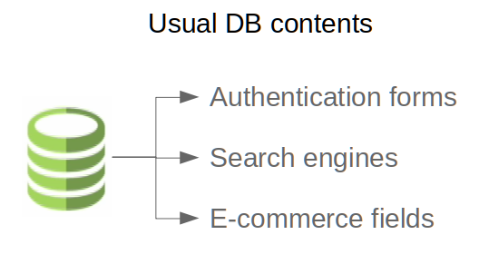
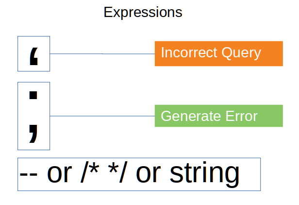

Statement Termination
Detection Techniques
1( The first step in this test is to understand when the application interacts with a DB Server in order to access some data. Typical examples of cases when an application needs to talk to a DB include:

• Authentication forms: when authentication is performed using a web form, chances are that the user credentials are checked against a database that contains all usernames and passwords (or, better, password hashes).
• Search engines: the string submitted by the user could be used in a SQL query that extracts all relevant records from a database.
• E-Commerce sites: the products and their characteristics (price, description, availability, etc) are very likely to be stored in a database.
2) The tester has to make a list of all input fields whose values could be used in crafting a SQL query, including the hidden fields of POST requests and then test them separately, trying to interfere with the query and to generate an error. Consider also HTTP headers and Cookies.

3) The very first test usually consists of adding a single quote (‘) or a semicolon (;) to the field or parameter under test.
• The first is used in SQL as a string terminator and, if not filtered by the application, would lead to an incorrect query.
• The second is used to end a SQL statement and, if it is not filtered, it is also likely to generate an error.
• Also comment delimiters (-- or /* */, etc) and other SQL keywords like ‘AND’ and ‘OR’ can be used to try to modify the query. A very simple but sometimes still effective technique is simply to insert a string where a number is expected

4) Monitor all the responses from the web server and have a look at the HTML/javascript source code. Sometimes the error is present inside them but for some reason (e.g. javascript error, HTML comments, etc) is not presented to the user. A full error message, like those in the examples, provides a wealth of information to the tester in order to mount a successful injection attack. However, applications often do not provide so much detail: a simple ‘500 Server Error’ or a custom error page might be issued, meaning that we need to use blind injection techniques. In any case, it is very important to test each field separately: only one variable must vary while all the other remain constant, in order to precisely understand which parameters are vulnerable and which are not.